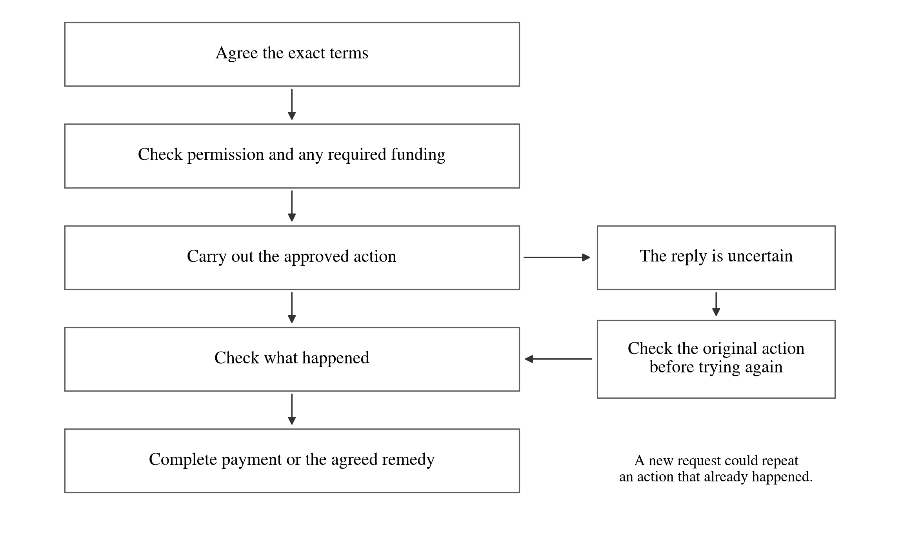

Agentic Agreements Protocol
Want a concrete starting point? Try one agreement and see its exact result. This page and the unchanged downloadable PDF remain the dated long-form guide.
A plain English guide to the Covenant project
Covenant, now called the Agentic Agreements Protocol or AAP, is software for making agreements that people and their AI agents can carry between systems, check for themselves and use to coordinate work. It brings together the terms of a deal, the parties' approvals, the evidence of what happened and the agreed way to handle a problem. The aim is to make it easier to rely on an agreement after the original conversation has ended.
An AI agent is a program acting on someone's behalf. It might find a supplier, commission research, negotiate a price or arrange a delivery. A protocol is a shared set of rules and formats that different programs agree to use. AAP supplies those rules for agreements. The AI model, payment provider, delivery service and people making judgments can remain separate.
The project has working software and extensive recorded development tests. The version described here is still a development preview. Some functions work locally today; others need an owner to connect a real service or adopt a particular network. A public production network and independent security qualification remain outstanding.
1 The problem Covenant is trying to solve
Suppose you ask an AI assistant to buy a research report. Finding someone who offers reports is only the beginning. The assistant needs to know exactly what you want, how much it may spend, whether the supplier accepted the same terms, what counts as a satisfactory report and what happens if the report never arrives. If the assistant stops halfway through, another program should be able to see what has already been agreed or paid.
Today, much of that information can sit in a conversation, a provider's account, a payment receipt or a person's memory. AAP's approach is to keep a precise, inspectable record of the relationship. A useful analogy is a job folder containing the signed work order, the approvals, delivery notes, payment evidence and dispute instructions. The parties can keep their own copies and check the parts they need. The analogy has a limit: the folder records evidence and rules; it does not make every statement inside it true.
That can matter even for a small, unpaid arrangement. Two neighbours might record who borrowed a tool and when it should be returned. A researcher might grant permission to use a dataset. A business might ask several suppliers for proposals and preserve the exact offer it chose. Payment, a blockchain and a new user account are optional for the basic drafting and portable agreement paths.
The larger ambition is to make useful agreement machinery reusable. A new application should be able to reuse a way of getting approval, showing evidence or recovering from an interrupted request, instead of inventing each part again. Whether this saves enough time and uncertainty to attract sustained use is a question for real pilots. Local tests show how the mechanisms behave; they do not establish market demand.
A record that can leave the original application
Portability means another program can receive the agreement and the relevant supporting records, identify their exact versions and run the applicable checks. It does not have to accept the original application's summary on trust. A recipient still needs to know whose keys or decisions it accepts, which rules the agreement uses and whether it has enough current information. An unfamiliar document can be preserved without pretending the receiving program understands how to execute it.
Different questions need different answers
The distinction below runs through the whole system. It stops an encouraging message such as “verified” from claiming more than the evidence supports.
| Question | What can answer it | What still needs checking |
|---|---|---|
| What did the parties agree to | The exact terms and the required signatures | Whether the signers had the relevant authority |
| May this agent act now | The owner's current permission and its limits | Whether a particular action satisfies those limits |
| Has money been set aside | Evidence from the selected custodian or ledger | What the balance represents and who controls it |
| Was the work delivered | The agreed delivery evidence and review | Whether that evidence establishes the promised quality |
| Has payment happened | An observation from the selected payment service | Finality, reversibility and any remaining payment legs |
| Is a dispute finished | The result of the agreed procedure | Whether the resulting remedy has actually been carried out |
2 An ordinary job from first request to final payment
Imagine a small business needs a research report on a prospective supplier. It authorises its assistant to seek a report for up to 100 pounds. A research provider offers to deliver it for 85 pounds by an agreed deadline. The report must cover specified questions, cite its sources and flag information it cannot verify. These amounts and parties are an illustration, not a record of a real transaction. The example brings together different parts of AAP. The parties or their operator must choose and connect the relevant agreement, permission, delivery and payment mechanisms; it is not one service that automatically performs every step.
Start with the need
The buyer can begin with an ordinary sentence describing the job. The software can save that need, keep proposals and show changes between them. The buyer does not have to design a full contract system before asking for one report. Missing commercial terms remain missing: the software must not quietly invent a price, a deadline or permission to spend.
The assistant can search the installed tools or service descriptions supplied to it. Searching those records is different from searching the whole Internet. A result describes a possible supplier; it does not prove that the supplier is honest or give the assistant permission to connect to it. The owner chooses which services, identities and connections the assistant may use.
Turn the chosen proposal into something precise
The parties review the deliverable, price, deadline, evidence and review process. “A good report” is too vague for many automated checks. They could instead agree a list of required sections, the date of the financial information and the sources that must be included. Where quality needs judgment, they should say who will judge it and how. AAP can preserve those choices without claiming to replace judgment.
The software gives the exact proposal a digital fingerprint, called a hash. If the material changes, its fingerprint changes. Signatures can therefore refer to one precise version. Some agreement paths also ask each party to return the exact acceptance criteria it is adopting before signing. This helps reveal different structured criteria; it cannot prove that two people understand every sentence in the same way.
Suppose the buyer changes the request to include three subsidiaries. That is a different proposal. The old approval does not automatically cover it. The parties can compare the change and provide fresh approvals where the chosen agreement rules require them.
Check permission and choose the payment arrangement
The buyer's assistant may have permission to negotiate within a budget but still need the buyer to approve spending. A company might require a second approver above a threshold. The provider needs its own authority to accept the job. These are separate checks from whether the parties' signatures match the terms.
The parties also choose how payment will work. They might agree ordinary invoicing, staged payment or an escrow arrangement, in which a custodian holds funds until specified conditions are met. AAP can connect the agreement to a selected payment mechanism. A local budget entry saying that 85 pounds has been allocated is not evidence that a bank or escrow provider holds 85 pounds. That requires evidence from the actual mechanism they chose.
Carry out the approved work
The provider produces the report. If an installed connection is going to write a file, call another service or submit a payment instruction, it must have the owner's permission and satisfy the agreed checks. The connection, called an adapter or connector, is the piece of software that actually talks to that outside system. Merely mentioning a bank, tool or robot in an agreement does not install a connection to it.
Configured execution workflows save the original request and its identity before attempting the relevant external action. This matters if the report is delivered or a payment is submitted but the reply is lost. The assistant should investigate that original action. Sending a new request immediately could deliver twice or pay twice. Where the outside service cannot provide a reliable answer, the result remains uncertain.
Review the result
The buyer checks the report against the agreed criteria. Some checks can be mechanical, such as whether a file matches the agreed fingerprint. Others depend on a reviewer or evidence source. A statement that a report was delivered is evidence of that statement; it is not automatically proof that the report was accurate or useful.
If the report is incomplete, the agreement might allow time to correct it. It might provide for a partial payment, a refund or a named dispute procedure. Those choices need to be part of the adopted rules. The software cannot assume that every dissatisfied buyer is entitled to the same remedy.
Finish the job and keep the record
When the agreed conditions are satisfied, the relevant authorised service can make or release payment. Its observation becomes part of the record. Any remaining obligations, such as confidentiality or a licence restriction, can remain visible after the main job ends. A dispute decision, a payment instruction and a completed payment are recorded as separate events.
This sequence can be simple or elaborate. A low-value favour may need only a clear understanding and acknowledgement. A substantial commission may need spending authority, milestones, funds held in advance and an appeal process. The point is to choose the structure the relationship needs.

3 What exactly goes into an agreement
An agreement can contain ordinary prose, a document prepared elsewhere, structured terms or a mixture of these. AAP can retain the exact document rather than requiring people to rewrite every agreement in a special programming language. The parties must still make clear which material they are adopting and what it means for their relationship. An attachment mentioned in a conversation does not automatically become an agreed term.
Exact words and useful structure
Structured terms give a program fields it can check: an amount and currency, a deadline, a party's role, a required document or a limit on permitted action. A price of 12.75 with two decimal places can be represented as exactly 1,275 minor units. AAP's service tools preserve that precision instead of silently rounding. An unknown price stays unknown; it does not become a free service.
Prose remains useful for matters that cannot be reduced to a short field. The newer review tools can link a particular passage in a document to the part of a machine-readable model intended to represent it. The parties can state whether the prose, the model or their joint interpretation should govern a difference. Checking that the passage and model have not changed does not prove that a translation or formalisation captures the original meaning. That still needs review.
Smaller promises can form a larger agreement
A more complicated deal can be built from smaller pieces: a delivery obligation, a payment obligation, a licence, a guarantee, a spending cap or an agreed method for deciding an open question. A larger agreement can identify exactly which versions of those pieces it includes. This makes reuse possible while keeping the dependencies visible.
For example, a research licence might permit internal use but prohibit public redistribution. A separate service obligation might require delivery by Friday. The same document can describe both, but fulfilling the delivery obligation does not automatically remove the licence restriction. Similarly, changing the main service does not automatically expand a guarantor's promise. The required consents depend on the agreed scope and rules.
Record a conversation without inventing agreement
Sometimes the useful first step is to preserve what someone says was agreed orally or in a message. AAP can record that account and who supplied it. One person's recollection does not create the other person's approval. Conversely, the absence of an AAP signature does not determine whether an outside legal system recognises an agreement. The software keeps the record and the question of legal effect separate.
Rehearse the parts that a computer can understand
Some optional tools let the parties model a finite set of events before signing. They can check, for example, what happens if delivery is accepted, refused or late, whether an obligation remains unresolved at the end and whether the model strands money in its simulated escrow. Other tools look for inconsistent deadlines or incompatible conditions.
These are rehearsals within a specified model and a limited amount of computation. A model can omit a real-world event, rely on false information or fail to express an important legal issue. If the checker runs out of its allowed search space, it reports an unknown result. “Safe within this model” is a useful, narrower result than “this deal cannot go wrong”.
4 Who may act for whom
A digital signature shows that a particular key signed a particular record. To use it in a real relationship, the recipient must also know what that key represents. It might belong to an individual, a company, an agent or a service. The fact that a record contains a company's name does not establish that the company authorised it.
Permission should have a clear scope
An owner can give an agent limited permission: buy a particular kind of report, spend no more than an agreed amount, use only approved services and stop at a specified time. A properly limited delegation passes on no more authority than the delegator has. An agent allowed to spend 100 units cannot create ten independent copies of that permission and thereby acquire a budget of 1,000. Shared or consumable budgets need a mechanism that tracks their actual use.
It helps to separate three decisions. A person may allow an assistant to prepare a proposal, to sign a particular agreement, or to carry out a particular payment or delivery instruction. Giving one permission need not give the others. The current agent tools are designed to make preparation and inspection useful before signing authority is supplied.
Companies can define roles and approval rules
The organisation facilities can record roles, changes in membership, revoked permissions and rules such as requiring two approvals. They can help prepare the corresponding permissions for a selected shared ledger. A local organisation record is not automatically the latest state of that network, and a software role is not by itself evidence of a person's legal authority to bind a company.
One present implementation limit matters here. Some agreement tools still require the named parties' own keys directly. They do not yet use every form of delegated network permission to accept a representative's signature instead. The project has useful pieces for delegation and agreements involving several parties, but the proposed unified workflow connecting all those pieces is unfinished. Repeated-service master agreements in this version are bilateral.
Revocation and existing promises
Removing an agent's permission can stop future actions under the relevant rules. It should not be confused with erasing a promise that was already made to another party. An existing agreement may have its own cancellation right, fee, notice requirement or remedy. Those conditions must be considered separately. Some network profiles implement specific override or recovery procedures; they apply only where that network adopted them.
The owner supplies trust
Trust settings come from the owner or institution relying on the agreement. A proposal cannot make its own author a trusted judge, appoint a new payment custodian or authorise the installation of code simply by saying so in its text. Discovery information helps an agent find a service; permission to use it is a separate owner decision.
5 How terms can change and decisions can remain open
Real agreements evolve. A buyer changes the scope, a supplier proposes a different price, or both parties learn something they did not know at the start. AAP gives the revised proposal a distinct version and links it to the earlier one, so the parties can compare them and obtain fresh approval. They need to retain the earlier record if they want its full text and proofs later. A reference to an earlier agreement records the relationship between versions; it does not give one party an unrestricted right to replace the other's terms.
Leave a question open deliberately
The parties do not have to settle every detail immediately. They can agree that a named person, agent or panel may decide a particular open question under a fixed method. The record identifies what is open, what must stay fixed, the decision-makers, the required approvals, the evidence, the limits and what happens if no adequate answer is available.
For example, a buyer and seller could allow a named agent to select a price between 80 and 90 units after reviewing their proposals. The currency, recipient and confidentiality terms stay fixed. The decision tool checks that the result stays within the agreed fields and limits and carries the required signatures. A decision changing the recipient or switching the currency is outside that permission.
The decision method is itself part of what the parties adopt. Changing the method, the decision-makers or the permitted range requires a new policy and the necessary approvals. This prevents a system from improving an algorithm and silently using the new algorithm to reinterpret an older promise.
A signed decision has a defined meaning
Depending on the chosen method, a check may establish that the agreed decision-makers signed the result. It does not necessarily prove that their reasoning was correct, their information was true or their interests were independent. A description saying “use the best algorithm” is not an executable implementation of that algorithm. The decision tool returns a proposed update to the agreement. Applying that update or carrying it out requires a separate authorised action.
The same discipline applies to AI-generated drafts and code. A useful suggestion can be reviewed and adopted. It does not acquire permission merely because an agent produced it or because it is included in a conversation.
6 How work and payment actually happen
AAP can organise the agreement around an action, but an actual action needs something capable of performing it. A file adapter can write an approved file. A configured tool connection can call an installed service. A payment provider can observe or submit the kinds of payment it supports. Each has its own limits, credentials, recovery behaviour and evidence.
Match the promise to a real mechanism
Before relying on a promise such as “the funds are reserved”, the parties need to identify who holds them and what evidence confirms the reservation. An escrow provider, a native ledger balance and a spreadsheet allocation are different mechanisms. AAP can keep those differences visible in the agreement and its review. A label such as “research capacity” also does not prove that the provider has enough people or equipment to deliver it.
The project includes local reference custody for demonstrations and escrow mechanisms within its own ledger. Demonstration balances are test units. When an outside payment service is selected, the relevant connection must be installed, authorised and checked. A prepared payment instruction or an exported receipt should be described according to what it actually establishes.
Several payments can belong to one job
The price of the work, a network fee, an agreed service charge and a dispute bond need not be the same payment. A bond is an amount put at risk under a specified rule, for example as part of a challenge procedure. The parties should be able to see the amounts, recipients, ceilings and conditions separately. A fee-inclusive preview helps reveal the total amount required without assuming that the preview has reserved or transferred it.
Milestones can divide a job into stages. For example, the parties could agree payment for an outline, a draft and the final report. The agreement should identify what triggers each stage and what remains owed if the work stops. If the selected payment mechanism cannot support the requested split, the agreement needs another compatible mechanism or a reviewed extension. Describing a split does not add that ability to an older escrow program.
Keep the identity of the original action
Consider a payment request that times out. The absence of a reply leaves at least two possibilities: the provider never processed the request, or it processed it and the reply was lost. Treating both cases as failure can create a duplicate payment. The configured workflow retains the original request and its identifier. An installed observation or recovery method can then check what happened; if no reliable method is available, the outcome remains uncertain.
The guarantee is only as strong as the chosen connection and custody arrangement. A durable local record can help one owner recover correctly. It cannot by itself make two independently cloned machines coordinate perfectly, or make a physical machine perform an action exactly once. AAP preserves uncertainty where the available evidence cannot settle the question.
A decision and its execution are separate
An agreed reviewer might decide that the provider should receive 60 and the buyer should receive 40 back. That decision can be checked as a procedural result. The actual payment or refund still needs the right custodian, funds and authority. Likewise, sending a delivery instruction is different from observing delivery. In a workflow spanning a bank, a file service and a ledger, there is no universal single transaction that makes every step succeed or fail together.
7 Evidence and what happens when people disagree
An agreement is more useful when it says in advance how performance will be checked. Evidence might be an exact file, an acknowledgement from the recipient, an inspection report, a signed statement, a device reading or an observation from a payment provider. Each source answers a particular question and has limits. A receipt showing that a recipient received a file does not by itself show that its contents met the promised standard.
Keep uncertainty and contradiction visible
The newer deal-review tools can distinguish four outcomes under the chosen evidence rules: there is enough support for a claim; there is enough evidence against it; there is not enough evidence either way; or there is enough evidence on both sides to expose a conflict. The last two cases matter. Missing evidence is different from contradictory evidence, and neither should be silently turned into success.
For example, one accepted source might say a shipment reached the warehouse while another says it was rejected at the gate. The system can preserve both statements, their subjects and their dates. A review policy decides how they count. Five reports controlled by the same organisation do not necessarily amount to five independent observations. Declared source independence still needs a basis outside the signatures themselves.
A failed signature check is also a narrow result: it means that statement was not authenticated as required. It is not proof that the underlying delivery did not happen. The difference prevents a technical error from becoming an invented finding about the world.
Choose a dispute procedure before relying on it
The parties can agree who may raise a claim, what evidence is required, how long the other side has to respond, who decides, whether an appeal is available and what happens if nobody can reach a decision. The project provides several procedures. Their rules differ, so an agreement must identify the one it uses.
An optional escalation procedure can start with a claim that an authorised participant may finalise after the agreed period has passed without a challenge. A contested matter can move through negotiation, a named decision-maker or a panel, with an appeal if the parties included one. These are explicit stages with signatures and time windows. They do not create a universal court, guarantee impartial judges or make every dispute resolve successfully.
Where a network supports the panel system, the parties can name the arbitrators together, let each side choose one and have those two choose a third, use a standing body or adopt a specified selection process. Signed arbitrator records can distinguish self-declared qualifications from claims supported by selected evidence. Appointment checks can consider declared conflicts; they cannot prove that every undisclosed conflict has been found.
Some paths prepare awards without holding money. Other paths within AAP's own ledger can affect funds under that ledger's rules. A declared bond is not a funded bond until the appropriate custodian confirms it. An appeal is not a guarantee that money already paid can always be recovered: in one native panel path, reversal depends on the relevant funds still being available. The choice of custody and when funds are released therefore matters.
Partial performance and outside arbitration
A job can be partly useful. The newer service tools can prepare an exact partial award, such as 25 paid and 75 returned from a total of 100, through a procedure the parties already accepted. They preserve the reasons and evidence separately from the signatures that approved an earlier procedural vote. A new split cannot simply be inserted after the event without the required basis.
An outside arbitration award can enter the agreed procedure as evidence; it does not release funds by itself. AAP can also prepare an award as signed structured data and a matching PDF, with checks that the readable document is exactly the one those signatures cover. These facilities help carry an award and its evidence between systems. Whether a tribunal has authority, whether a legal formality was completed and whether an award is enforceable remain separate questions. The software can record those assumptions and reviews; it cannot settle them just by producing a PDF.
8 Agreements that continue over time
A single job is only one kind of relationship. A business may hire a research provider repeatedly, retain a developer, license content, guarantee another party's obligation or run a supplier competition. AAP can assemble these relationships from exact terms and reusable procedures while keeping each new commitment visible.
Repeated work and retainers
A master agreement can set the scope, time period, total limit and maximum price of an individual job. Each later instruction, often called a call-off, identifies the master and receives fresh approval for its own price, scope and deadline. The signature on the master does not silently approve any later job a supplier chooses to create.
A retainer in this version is an explicitly chosen quote and job. The passage of a month does not by itself create a bill, renew permission or reduce a budget. Local allocation records can keep several approved jobs within an agreed cap. They can recover an interrupted update and prevent an identical retry from allocating the same job twice. They are not a bank balance, and independent copies of the local record do not enforce one global cap between themselves.
Cancelling a local allocation also differs from refunding money. A cancellation can release the recorded budget once under the required signatures. If an external payment has already happened, its treatment depends on the actual payment arrangement and the agreement's cancellation terms.
Conditions and deadlines
The parties can express conditions, milestones, repeated events, notice periods, opportunities to correct a defect and agreed waivers. The timing tools can distinguish when an event is said to have occurred, when someone observed it, when notice was received and when it became effective under the chosen rules. That can matter much more than a single timestamp.
For example, “correct the report within two working days after receiving notice” depends on the notice, the relevant calendar and the agreed start of the period. AAP can check bounded, explicitly supplied timing rules and identify impossible schedules. It does not automatically know every holiday calendar or determine legal effectiveness from a computer clock.
A missed date alone does not establish that every obligation is discharged or that a payment may be seized. The agreement might allow a cure period, require notice or leave a question for a reviewer. A waiver needs the approvals required by its chosen profile. Uncertain or overlapping time evidence can remain undetermined.
Competitions and shared terms
Suppliers can be invited to submit offers under an agreed procedure. Some paths support sealed commitments followed by later disclosure, explicit selection and a fresh agreement with the chosen provider. A fixed-prize contest must preserve the agreed prize. Choosing a winner is a separate act from hiring or paying it, and a recorded comparison is not proof of the best real-world value.
Guarantees, spending caps, delegation and substitution can also be described as explicit relationships. Their presence in a document does not reserve collateral, extend a guarantor's obligation or give a substitute party authority. Those consequences need the appropriate agreed rules, consents and mechanism.
9 How it fits with other software
AAP is intended to work with the programs people and agents already use. It does not supply the intelligence of an AI model. Its role is to make the agreement surrounding a task and the evidence following it explicit. A developer can use a local agent tool server, a software library or a configured connection to another service.
Tools and other agents
MCP is a way for an AI application to use software tools. A2A is a way for agents to exchange tasks. AAP can attach exact agreement references to those interactions. A service can require the caller to have accepted particular terms and have current permission before it performs the requested work. The service owner must configure that requirement, the trusted caller and the limits. A public description of the service is useful for discovery but does not supply those permissions.
The project also has a guarded client for owner-selected MCP programs. The owner fixes which program and tool may run, its environment and its budget. The client records actions and supports recovery. It is not a general sandbox for arbitrary downloaded code: the installed program still has the operating-system privileges the owner gives it.
Existing commerce and payment arrangements
The commerce tools can connect selected checkout, payment-request, mandate and receipt formats to one exact agreement. The named integrations include ACP, UCP, MPP, AP2 and x402. A nontechnical reader does not need to memorise those acronyms. Their purpose here is to preserve the connection between what was bought, the permission to pay, the payment evidence and any later obligation or dispute.
For example, a checkout might say what a customer is buying, while a payment service supplies evidence that a charge happened. AAP can preserve their connection without treating a payment mandate as a completed charge, or a completed charge as proof of satisfactory delivery. A prepared format or local test is also not certification of every outside provider implementing that standard. A buyer can sign observations against the agreed acceptance criteria. The software checks whether those observations meet the criteria, while the observations remain the buyer's account of what happened.
Content licensing is another application. A publisher and a crawler or buyer can identify the exact permitted use, relevant content and price. The licensing record does not by itself prove that the publisher owns all relevant rights, prevent every unauthorised copy or authorise an undisclosed royalty.
Physical work needs physical connections
Robot or equipment agreements can identify a mission, limits and the required approvals. Real execution still depends on an installed adapter, the device's own controls and reliable observations. The supplied software exercises reference and simulated paths; it does not establish the safety or performance of every real robot, radio or industrial device.
10 Finding people and reusing what works
An agreement system becomes more useful when an agent can find the right tool, service or method. AAP provides several ways to do that. They begin from a need and owner-selected information rather than assuming one compulsory global marketplace.
Save the need and compare proposals
A private request workspace can hold the original need, supplier proposals, counteroffers, selected evidence and the chosen offer. Changes to the need remain visible. An older proposal does not automatically become the answer to a different version of the request. Selection prepares the next step; the required parties still have to approve the exact agreement.
The workspace can search installed tools, locally stored descriptions or information obtained through an owner-selected connection. Missing facts remain unknown. A strict search can exclude results whose required attributes are unconfirmed. Rankings can help choose what to inspect, but a high ranking does not grant authority, establish performance or prove that the service is currently reachable.
Signed descriptions can travel through many channels
A provider can sign a description of itself and its services. The same description can be passed directly, hosted on a website or carried through another channel. The receiver checks the provider's signature under its own trust choices. If it receives two conflicting signed descriptions for the same version, it can retain the conflict rather than silently choosing one.
This reduces dependence on a single place to find information. It does not guarantee complete discovery. A carrier can withhold a newer description, and a conflict can remain unseen until both versions reach the same observer. The newer optional local index supports larger bounded collections and search; it is not a fully distributed global directory.
Reputation is contextual
Someone who delivers reliable translations is not automatically a reliable equipment custodian. The reputation mechanisms therefore use the particular task and the recipient's chosen contacts and evidence. Introductions can carry less weight as they move further from trusted contacts. Repeated claims behind one introduction need not count as many independent sources.
These rules can make simple fake-review strategies less effective under the chosen assumptions. They cannot prove that several identities belong to independent people or defeat every colluding group. Signed success receipts are attributable claims about successful work. They are stronger than anonymous clicks, but they are not independent proof of every underlying fact.
A price for unsolicited approaches
An optional mechanism lets a recipient require a small refundable stake with an unsolicited proposal. The recipient's signed policy explains the amount, the accepted holder and the decision period. A welcomed proposal can receive its stake back. If the recipient marks it as spam within the decision period, the stake goes to the recipient or the beneficiary named in the policy. If no decision is recorded in time, the holder refunds it under the stated rules. Known contacts may qualify for lower amounts. Paying this entry charge does not buy a better ranking.
This is sometimes called postage. Its usefulness depends on reasonable policies, credible custody and how unfair decisions are handled. A recipient can make a poor decision, and a sender willing to lose the stake can still send a proposal. The supplied holder uses local test units; using real money needs a separately adopted custodian.
Reuse a method without changing an old promise
The request tools can preserve a useful method or protocol and its exact version. The Agora-related path supports moving from an ordinary-language exchange to a reusable, explicitly identified communication method. Reusing its description does not automatically install code or permit a new action. The owner must adopt any executing routine and its connections separately.
AAP can also learn which routes have helped an owner in a particular context, using separately signed records of the outcome and the tools used. The owner can adopt an expiring recommendation or use it to order eligible search matches. Explicit task choices and the full catalogue remain available. Popularity does not change an agreement's meaning, create authority or turn an experimental feature into a stable one.
11 Privacy identity and recovery
Different relationships need different privacy. A public offer might reveal the item and price while keeping the eventual buyer private. A research agreement might reveal only selected findings to a reviewer. A company might need an auditor to inspect an approval without giving every employee the underlying commercial terms. AAP lets the chosen arrangement state what is disclosed, to whom and under which conditions.
Reveal the part someone needs
Selective disclosure means showing particular fields or claims without revealing all the surrounding material. Encryption means making content readable only to holders of the relevant secrets. These can be combined, but they answer different questions. A system can encrypt a whole agreement for a reviewer, or send only the fields that reviewer is meant to see.
Some identity credentials also support selective disclosure. A trusted issuer can sign a set of claims and the holder can present selected claims for a particular recipient and purpose. The recipient must choose which issuer it trusts and check the credential's scope and expiry. These credentials do not automatically establish anonymity, unique personhood or permission to spend. Repeated use can still be linked in some circumstances.
Protecting a file is different from hiding a relationship
An encrypted agreement can still reveal that two accounts interacted, when messages were sent or which public ledger funded an action. Some optional private-resource mechanisms conceal particular values and ownership information while proving specific accounting rules. Other information, such as the pool, funded totals or timing, can remain visible. The precise protection depends on the selected profile.
The project also has private provider records that disclose selected account information while hiding other entries from the recipient. The provider's validating replicas still see the underlying commands. A proof that a record belongs to the provider's accepted history is not the same as a proof that hides the record from the provider itself.
The owner-controlled host may need to see plaintext to prepare or review an agreement. An assistant can therefore receive sensitive content even when a later delivery channel is encrypted. A private directory, an encrypted backup and a public ledger also have different visibility. The default private request workspace uses local filesystem protection; that alone is not encrypted storage.
Sharing can be narrowed but copies cannot be recalled
The parties can adopt a new disclosure plan with fewer readers and fresh approvals. That changes future permitted sharing under the plan. It cannot make someone forget a document they already received. Likewise, withdrawing an optional public page cannot erase copies, search caches or screenshots taken earlier.
The optional public-web facilities distinguish private material, an unlisted page and a page intended to be indexed. Unlisted means publicly accessible to someone with the address, even if search engines are asked not to list it. Publication requires the relevant exact approvals; installing the software does not publish a market or a person's profile automatically.
Login and signing keys
AAP includes reference facilities for owner-hosted sign-in, passkeys, encrypted local keys and recovery plans. These can help an owner control who uses an account. A successful login is not a payment approval or a network grant. The permission to perform a consequential action must still be established separately.
Recovery can involve a chosen number of guardians and a delay before a new key takes control. Under the supplied continuity policy, ordinary account transactions also need the configured guardian co-signatures. The threshold and monitoring arrangements matter: a plan requiring one guardian has different risks from one requiring several independently controlled guardians. A recovery plan written down but never adopted does not recover an account, and losing every usable secret or recovery route can make access permanently unavailable.
An optional hosted wallet takes a different approach: an operator holds encrypted user keys and applies approval and audit rules. It is a custodial arrangement. The operator's ability to hold those keys remains part of the trust relationship, and exporting a key does not prove that every old copy was deleted. This is an experimental owner-operated component, not evidence of a generally available hosted wallet service.
Protection changes over time
The project includes some newer cryptographic methods intended to address future quantum-computer threats. That does not make every part of the system quantum resistant. Different signature, encryption and proof mechanisms have different assumptions. Some private-message paths use long-lived recipient secrets, so a later compromise can expose retained older messages. The protection depends on the selected mechanism; a general claim of permanent secrecy would be unjustified.
12 Working without a reliable Internet connection
An agreement can be useful even when its parties cannot reach a central server. AAP can carry exact records as files or through selected local and intermittent channels. Parties can review and independently sign the same exact retained draft while disconnected; changing its terms requires fresh signatures. A recipient can check supported signatures and agreed content using information already held on the device. This is useful for field work, disrupted networks or simply keeping records independent of one online service.
Carry the same record through a different channel
The available components include file transfer, QR-based exchange, local network transfer and adapters for selected Bluetooth, mesh-radio and delayed-delivery arrangements. Some facilities split a larger record into pieces and reconstruct it later. A channel carries the bytes; it does not decide what those bytes authorise. A message delivered by radio has the same agreement checks as one carried in a file.
These paths have been exercised in software tests and local demonstrations. That is different from qualifying actual radio hardware, a mobile operating system, a satellite link or a device in difficult field conditions. An owner must choose and test the real transport being used.
Acknowledging receipt does not acknowledge performance
A recipient can sign an acknowledgement that it has received and kept a particular package. That helps the sender know which exact record reached the destination. It does not automatically mean the recipient accepted the deal, that the work was completed or that payment arrived. Encrypted local queues can retain material for later transmission, and an uncertain send can remain pending instead of being described as successful.
Offline checking has a freshness limit
A device can verify an authentic older permission while being unaware that the permission was revoked elsewhere. It can also hold an authentic old account balance without knowing about a later spend. To rely on current authority or scarce funds, a workflow needs the appropriate fresh evidence, a bounded permission or an explicitly agreed offline-risk arrangement.
Some optional offline mechanisms use precommitted limits, bonds or vouchers. They are not unlimited offline cash. Other paths can exchange messages without the Internet if enough of the network's required participants still communicate through another channel. When the required participants cannot communicate, shared spending decisions may have to wait. AAP does not solve that conflict by inventing agreement between disconnected machines.
Old records need a reference point
Imagine someone replaces a local history with an older but internally valid copy. Every signature in that copy may still check out. Detecting the rollback requires something retained independently that shows a later state existed. AAP uses exact history references and, in optional paths, witness acknowledgements or checkpoints to help make that comparison. These records need their own custody; discarding them can discard the evidence of rollback. An optional execution gate can also wait for fresh witness acknowledgement before allowing a new action, under the chosen witness and timing rules.
Time evidence has similar limits. A signed timestamp can show what a source asserted, and some methods can bound when a document was sealed. Neither automatically proves when a physical delivery occurred or that an isolated device knows the current time. The newer timing tools preserve those differences instead of forcing every deadline into one supposedly perfect clock.
13 When a shared ledger helps
Portable agreements can exist without a blockchain. A shared ledger becomes useful when several participants need one accepted account of a scarce resource: which units are available, which are reserved and which have been spent. If two assistants both try to spend the same remaining balance, individually valid signatures do not settle the conflict.
Agreeing which changes count
AAP's native ledger is its own optional system for accepting resource-changing events under a network's chosen rules. Participants called validators check proposed changes and certify an accepted history. The rules identify the validators, the number of approvals required and what they must retain when they crash or change membership. The security claim depends on those rules and on the assumed number of faulty participants.
An illustrative committee with four members can require three approvals and be designed to tolerate one faulty member. That is meaningful only if the underlying voting and recovery rules are correct and the members' keys and records are controlled as assumed. Four processes run by one person are not evidence of four independent organisations. A signature threshold by itself is not a complete production network.
Reservation is a real change within the chosen ledger
For supported agreements, the native path can check permission, exact acceptance and available recorded units, then move those units into held or reserved state. That gives the parties more than a statement saying a balance might be available. It is still a claim about that ledger's resource. A token labelled as a pound, a commodity or an hour of machine time needs an outside arrangement if it is to represent that thing in the world.
A record can be authentic without being the latest record. The recipient may need a minimum accepted height, an exact retained checkpoint and a trusted chain identity. A chain identity identifies the particular network and its initial rules. It prevents evidence from a different network being accepted as evidence for this one.
A small proof and a complete replay answer different questions
A compact proof can show that a selected record appears under a certified checkpoint. A fuller independent checker can reconstruct supported ledger changes and compare its calculated state with that checkpoint. AAP includes both kinds of tools, each with defined limits. A small inclusion proof is not a complete audit of every application rule that produced the record.
The independent native replay tool uses a separate implementation for a defined set of histories and operations. It refuses unsupported features and does not claim coverage of the whole native stack. “Independent implementation” here also does not necessarily mean an unrelated organisation wrote and audited it.
Optional features belong to particular versions
The package, agreement formats and native ledger rules have separate version numbers. A higher number does not mean every feature of every earlier experimental profile is active in that network. A deployment has to choose compatible rules explicitly. The current software supports native 0.15 and an optional 0.16 successor, while retaining historical formats for checking older records.
A newer escrow-channel experiment explores deposits, jointly signed balance updates and a challenge if one party disappears. It is an executable preview using copied state. It has not been integrated as an active operation in the historical native ledger. It should not be described as a deployed payment channel.
14 How the economics and markets fit together
The basic agreement language does not require everyone to buy a project token. A particular network, custodian or service can nevertheless charge for the work it actually performs. Keeping an archive available, running a payment service, reviewing a dispute and maintaining infrastructure have costs. Those costs need an explicit funding arrangement.
Make fees and funding visible
An adopted fee policy can identify the resource used for payment, the maximum charge and how the fee is distributed. A sponsor can cover a specified user's fee from an already funded allowance. Rewards and rebates can come from funded reserves. Writing down a reward schedule is different from placing assets in that reserve.
The newer economics code includes an optional approach based on measured or declared operating cost, capped margins and sharing cost reductions with users. The usefulness of that policy depends on credible cost measurement and governance. The software does not independently discover an operator's true costs. Its economic scenarios are calculations under assumptions, not forecasts of revenue or token appreciation.
Some native policies can route an explicit part of a fee to a founder or another beneficiary. That is part of the chosen fee distribution, not a universal tax on the face value of every agreement. The selected commercial model also does not charge every independent user of the core a royalty. These are separate economic arrangements.
Back a service with a defined bond
An operator can have capital committed behind a service under exact terms. The agreement needs to say who owns the capital, what fault can cause a loss, how a reward is funded and when withdrawal is allowed. The retained native service-bond mechanism has a narrow punishable fault: signing conflicting contents for the same checkpoint slot under the same chain and service bond. It does not insure against every kind of poor work or automatically choose who becomes a validator.
Rewards require a settled service with delivered units recorded, funded resources and the applicable approvals. Merely holding capital does not create a guaranteed annual return. An allowance or discount can also be useful without promising that a token's market price will rise.
Auctions and credit
Auction tools can calculate proposed allocations under specified rules, including different ways of setting the price. They can make tie handling and sealed-offer disclosure explicit. The result still needs the agreement, custody and execution machinery appropriate to the transaction. An auction calculation does not reserve inventory or prove that bidders are independent.
Credit tools can make the amount advanced, repayment amount, fees, maturity, collateral description and recourse visible. The supplied executable lending demonstration uses local disposable credits and an unsecured, single-asset arrangement. A more elaborate loan can be described, but describing collateral does not value it, transfer ownership or enable seizure. Different repayment patterns can also incur different fees.
Some native clearing mechanisms can reduce the amount that must move when several participants owe one another money. In a simple example, if A owes B 100 units, B owes C 90 and C owes A 80, their net positions are A paying 20, B receiving 10 and C receiving 10, before any fees. Actual use still requires the participants' agreement and the supported settlement rules. This arithmetic is not automatic legal netting across unrelated banks or contracts.
Predictions and information markets
The native prediction mechanisms let parties define a question, the sources and reviewers that will resolve it, reporting deadlines and the payout rule. Positions can represent one outcome among several, whether a number crosses a threshold or a graduated payout between agreed bounds. The supported native mechanism funds the relevant claims with collateral. It does not fetch the truth of the question by itself.
An unresolved outcome deserves particular care. If the agreed fallback ends the market without a resolved answer, the result is called VOID. Under the ordinary equal-share VOID rule, a binary market pays half the complete-set amount to each outcome. It does not refund every trader's purchase price. A position bought for 8,000 test units in a 10,000-unit binary market would receive 5,000 if the market is settled as VOID, before fees. The reporter's availability and the chosen fallback therefore affect the economics. A stricter hold option is available under separate rules that are inactive by default; it is not the ordinary default.
These mechanisms do not amount to an operating public exchange. The native prediction profile lacks an integrated public order book and automatic market maker. Likewise, a model of an insurance or risk-sharing agreement does not establish a funded insurer. The agreement, capital, operator and market participation all need to exist in practice.
Spend on evidence when it is worth having
An optional analysis tool compares the cost of obtaining more evidence with the improvement it could make to a decision. The owner supplies the possible states, assumed probabilities, likely observations, consequences and costs. This can help decide whether another inspection is worth its price or delay. It does not learn reliable probabilities automatically, fetch the evidence or make the payment.
The project's own business model
The current selected strategy keeps the core under the MIT licence and charges for separately identified infrastructure, enterprise services and official compatibility assessment or branding. Potential paid offerings include managed services, retention, connectors, support and explicitly agreed distribution fees. Existing core licence rights are not replaced by that strategy. The required software and third-party notices remain relevant; a visible marketing badge is not a universal condition of core use.
A compatibility assessment should say which product, version and tests it covers. Paying for assessment must not purchase a passing result. The commercial strategy and draft terms do not establish accepted customer contracts, a launched billing operation, a registered mark or independent accreditation. A code function that calculates a royalty is not authority to debit a customer.
15 How the parts fit together
The current architecture separates the jobs the software needs to do. Its internal names draw on Aristotle, but the practical questions are ordinary ones: what is the record made of, what does it mean, how will it be carried out, how will a disagreement be handled and how do many relationships coexist? A reader does not need the philosophical vocabulary to use the system.
| Part | Question it answers | Examples |
|---|---|---|
| Materials and identity | What exact record are we looking at | Documents, fingerprints, signatures, keys, privacy envelopes and ways to carry them |
| Agreement | What have the parties accepted | Terms, roles, conditions, acceptance criteria, negotiation and amendments |
| Performance | How will the promise be carried out | Delivery, payment connections, tool calls and observations |
| Dispute and remedy | What happens when something goes wrong | Evidence review, decisions, appeals and the agreed consequences |
| Relationships at scale | How can many agreements work together | Discovery, reputation, markets, organisations and shared-ledger governance |
The navigation and user interfaces sit alongside these parts. The project calls them instruments. They help an agent find a useful function and understand its inputs. Their presence does not grant authority. The design aims to let the smaller agreement machinery work without requiring all the market and network machinery above it. Some dependencies in the current code still need to be separated, so the diagram is an architectural direction as well as a description of responsibilities.
A small entrance to a larger set of functions
The current default agent interface begins with four tools: start the task, find a relevant capability, explain its exact requirements and call the chosen operation. More specialised tools remain available. This keeps first contact manageable without removing the larger catalogue. An agent should retrieve the actual requirements for an operation rather than guess fields from a vague description.
The selected tool and owner configuration determine what a call can do. A host without signing keys is not a universal guarantee that every reachable function is read-only. Saving a request, making an authorised network call and signing an agreement are different capabilities. Owners should choose the host and the permissions needed for their intended use.
Common records and optional extensions
The retained Common Language distinguishes statements, evidence, permissions, offers, acceptances, promises, decisions, actions and receipts. These distinctions matter because recording a claim, granting permission and performing an action are different events. The historical language format remains available alongside newer agreement profiles.
An extension adds a particular meaning or mechanism. It might describe a credit agreement, a confidential resource transfer, an appeal procedure or a connection to a new device. Other programs can retain its exact records even if they cannot interpret them. To act on that extension, they need a compatible implementation and the appropriate authority.
Useful agreements do not all need the same machinery
A portable signed document can be enough for a straightforward arrangement. A provider handling funds needs custody and recovery. A dispute service needs its adopted procedure and evidence. A public ledger needs validators and operations. Combining these parts is valuable when their assumptions fit; a name or version number alone does not make them compatible.
16 Keeping agreements usable as technology changes
A long-lived agreement should not depend entirely on one vendor, one website or one programming language. AAP's continuity approach is to retain the exact records, explain the rules used to interpret them and preserve enough examples and checking software for another implementation to reconstruct the relevant checks.
Keep old meanings intact
An upgrade should not silently change what an old signature means. If a new rule changes which actions are valid, the project uses an explicitly identified successor and retains the historical interpretation. The same applies to a new decision method, payment profile or cryptographic scheme. Old and new records can coexist without pretending they are identical.
Preservation includes more than storing a fingerprint. The underlying document, evidence, definitions and relevant software or specification may be needed later. A fingerprint can detect a mismatch when the bytes are available; it cannot reconstruct a lost report. Archives also need independently retained trust references and, for encrypted material, usable decryption keys.
Different components provide different kinds of redundancy. Some local evidence storage can reconstruct limited missing pieces. Some archive formats keep repeated copies. Some broadcasts use extra encoded pieces so that the whole message can be rebuilt from a sufficient subset. These are useful mechanisms with defined limits, not evidence of a permanent worldwide storage network.
Changing operators and controllers
Some provider workflows can withdraw an old coordinator's permission, move control to a new one and refuse later commands from the retired coordinator. Reservations and the identity of unfinished requests can survive that handover within the supported provider. This is more specific than a general promise that any two machines can safely take over any outside action.
Native network upgrades and succession have their own rules. The documented staged governance begins with founder and council roles, adds validator requirements for specified changes and can add reserve-holder approval at a later stage. Stages do not advance automatically because a date passes or a growth target is met. Releasing the founder veto or changing a committee requires the specified process.
These are rules for a chosen network, not a universal government for all portable agreements. Lex Perennis is an optional constitutional profile; it applies where it is adopted. Software governance records also do not establish the legal incorporation, board composition or ownership of the organisation operating them.
Verify an update before adopting it
The update tools can check a package against trusted release keys, signature thresholds, expiry and required approval for changes to protected rules. The owner can then stage the verified bytes as a separate action. They do not automatically install or run an update, and a valid release signature is not proof that the new software contains no bugs. An adopted public update service and its accepted release authority remain to be established.
Specialist imports follow the same principle. An adapter can retain an outside format, identify what it mapped and preserve the terms it could not interpret. The present financial-instrument adapter is deliberately narrow; importing a loan description does not calculate every future payment or turn it into an executable loan. Keeping the losses and unknowns visible makes later review possible.
Longevity requires people and funding
The project aims to make agreements survive changes in operators, devices and cryptography. That requires continued maintenance, independent copies, restoration drills and funded custody. It also requires a considered retention policy: deleting sensitive evidence may protect privacy while reducing what can be proved later. The code supports parts of that work. It cannot guarantee that a community will maintain it for centuries or millennia.
17 What exists now and what remains to be established
The current software contains substantially more than a signing demonstration. It includes portable agreements, owner review and signing, limited delegation, service workflows, custody references, dispute procedures, native ledger functions, privacy facilities, offline carriers, connectors and operational tools. The examples and tests exercise selected combinations of those features. They are not all one deployed service.
Working software and recorded tests
Recorded development testing includes extensive local tests, installed-package journeys, deliberately adverse cases and separate implementations for defined checking tasks. This provides evidence that the exercised code behaves as specified in those circumstances. Many demonstrations use synthetic parties, keys and balances controlled by one test harness. Multiple test identities are not evidence of independent real customers or operators.
There is an experimental core specification and a separately written checker tested against its defined examples. Additional native and application features have their own verification coverage. Neither the name “Core 1.0” nor a passing bounded checker establishes that the whole system is stable or independently audited. The project explicitly describes the current state as a development preview.
The software also includes operational support: health checks, redacted logs, metrics, configuration checks, backup and restoration tools, pinned dependency information and release inventories. These help an operator manage a deployment. They still need testing with the actual machines, custody, network exposure and people who will operate it. Restoring data must preserve the signing history needed to avoid contradictory future decisions.
Questions for a real deployment
Before a real organisation relies on a particular path, it needs to identify the exact agreement profile, the owner and signing arrangements, the actual custodian and payment connection, the evidence and dispute process, and the recovery plan. A useful pilot should then observe real participants completing the relevant work, including at least one interruption or disagreement. The point is to qualify that intended use, rather than infer readiness from a demonstration of another feature.
Independent security review, complete independent native replay, real operator and custody arrangements, exact release approval and measured external pilot use remain outstanding. A completed run of the hosted release checks also remains outstanding. The recorded demonstrations do not establish a public mainnet launch, real money movement or participation by external users.
A straightforward first use
A first useful experience can be a draft for one small job, a counteroffer showing exactly what changed, and verification that old signatures do not approve the revised price. The invited pilot provides that kind of local demonstration. The owner can then decide which real signing, delivery and payment mechanisms to add for a bounded trial. A first local demonstration does not require buying a token or opening a hosted account. An unpublished package launcher should not be treated as an established installation route.
The practical proposition is a record that remains useful when an agreement leaves its original chat, application or machine. Its value depends on whether people can understand the terms, give appropriate authority, obtain credible evidence and recover when something fails. The current implementation makes those questions explicit and supplies a growing set of mechanisms for answering them.
18 A short glossary
| Term | Meaning in this guide |
|---|---|
| Agent | Software acting on behalf of a person or organisation |
| Principal or owner | The person or organisation whose authority the agent uses |
| Protocol | Shared rules and formats that different programs agree to follow |
| Profile | A particular version of rules chosen for a kind of agreement or mechanism |
| Hash or fingerprint | A compact identifier calculated from exact data so a changed version can be detected |
| Digital signature | Evidence that a particular key signed particular data |
| Assent | Recorded acceptance of the exact terms in the relevant role |
| Grant or mandate | Permission to act within stated limits |
| Custody | Responsibility and practical control over keys, records or funds |
| Escrow | Funds or other resources held under agreed release conditions |
| Adapter or connector | Software connecting the agreement workflow to an actual tool, provider or device |
| Receipt | An attributable record of a specified action or observation |
| Checkpoint | A reference to a particular accepted history or state, useful for later comparison |
| Quorum | The required number or weight of approvals under the selected rules |
| Finality | Acceptance of a result under a particular system's rules and assumptions |
| Native ledger | AAP's optional shared system for recording accepted changes to resources and agreements |
| Call-off | A new individual job placed under an existing master agreement |
| Reconciliation | Checking what happened to an earlier request before deciding what to do next |
| Selective disclosure | Showing selected information while withholding other material |
| Zero-knowledge proof | A proof of a specified statement without revealing certain underlying inputs |